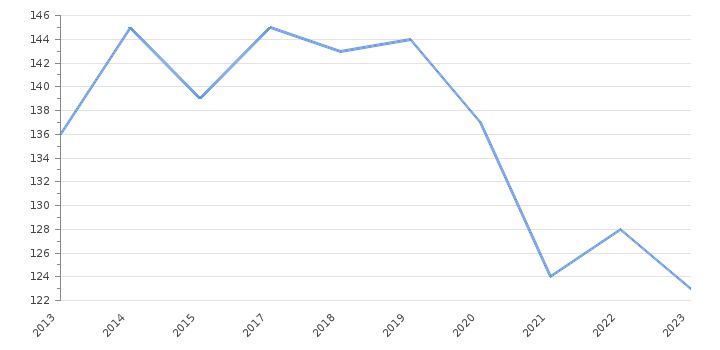

Corruption is a persistent and pervasive issue that undermines the foundations of society, erodes trust in institutions, and impedes economic development. This comprehensive research aims to provide an in-depth examination of the current state of corruption globally, exploring its various manifestations, impacts, and potential solutions.
Define corruption and its various forms, including bribery, embezzlement, nepotism, and cronyism. Explore the distinctions between grand corruption (involving high-ranking officials) and petty corruption (involving lower-level bureaucrats). Examine how corruption manifests differently across sectors such as politics, business, judiciary, and law enforcement.
Provide an overview of global corruption trends, highlighting regions and countries where corruption is most prevalent. Utilize data from reputable sources such as Transparency International's Corruption Perceptions Index and the World Bank's Worldwide Governance Indicators. Analyze trends over time to assess whether corruption is increasing or decreasing on a global scale.
Figure 1: Corruption Perceptions Index trends over the past decade
Investigate the multifaceted impacts of corruption on society, economy, and governance. Discuss how corruption undermines democracy, rule of law, and public trust in government institutions. Examine its adverse effects on economic growth, investment, and poverty alleviation efforts. Highlight the connection between corruption and human rights abuses, including the exacerbation of inequality and marginalization.
Identify the underlying factors that contribute to the prevalence of corruption, such as weak governance structures, lack of transparency, and impunity. Discuss how factors like political instability, poverty, and cultural norms can fuel corrupt practices. Examine the role of global factors such as illicit financial flows, transnational crime, and offshore tax havens in facilitating corruption.
Evaluate existing anti-corruption initiatives at the national, regional, and international levels. Highlight successful case studies of countries that have made significant progress in combating corruption. Discuss the importance of legal frameworks, enforcement mechanisms, and institutional reforms in tackling corruption effectively. Explore innovative approaches such as open data initiatives, citizen engagement, and technology-driven solutions in the fight against corruption.
Assess the prospects for reducing corruption in the coming years, considering ongoing challenges and emerging trends. Discuss potential obstacles to anti-corruption efforts, including political resistance, vested interests, and global governance gaps. Propose strategies for addressing systemic issues and building sustainable anti-corruption frameworks.
Corruption remains a formidable obstacle to inclusive development, social justice, and democratic governance worldwide. By understanding its complexities and implementing comprehensive anti-corruption strategies, we can work towards building more accountable, transparent, and equitable societies.